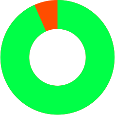
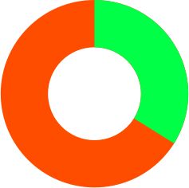

आज नामर्दी आधुनिक मर्द की सबसे बड़ी समस्या बनकर उभरी है। कभी न कभी हर सेक्स, सेक्स सम्बन्धों या अन्य विषय के फोरम पर आपको लिंग के साइज़ पर चर्चा होते हुए दिख जाएगी। लेकिन ज़्यादा महत्वपूर्ण क्या होता है? बड़ा साइज़ या इसे उपयोग करने की कला? एक असली मर्द का लिंग लंबा और कड़क होना चाहिए जो फौलाद की तरह कठोर हो – यह मर्द के दम-खम और इज्जत का मुख्य सबूत है। एक बड़ा लिंग सफलता की गारंटी की तरह होता है।
यूनिवर्सिटी ऑफ यूटा (यूएसए) के वैज्ञानिकों ने खोज की है कि मर्दों में छोटा लिंग नामर्दी उत्पन्न करता है।
Risk of infertility
Big penis
Small penis
प्रजनन क्रिया एक बहुत ही आधारभूत प्राकृतिक मानव प्रवृत्ति होती है। हर औरत के लिए यह महत्वपूर्ण होता है कि उसका मर्द परिवार बढ़ा सके। इसलिए औरतें स्वाभाविक रूप से ही उन मर्दों को चुनती हैं जिनके लिंग बड़े होते हैं।
-
मनीषा, 23 साल «एक छोटा लिंग पूरा मजा खराब कर देता है। मैं एक लड़के के साथ करीब एक महीने तक डेटिंग कर रही थी और जब सेक्स की बारी आई तो मुझे इससे ज़्यादा निराशा पहले कभी नहीं हुई थी। मैं उस लड़के को बहुत चाहती थी लेकिन मुझे उसे छोड़ना ही पड़ा »
-
लीना, 29 वर्ष «मैं कई महीनों से एक अमीर लड़के से डेट कर रही थी। उसके पास बड़ी कार, बड़े-बड़े प्लान और बहुत घमंड था। उसकी एक ही चीज खराब थी और वो यह थी कि उसका लिंग बहुत ही छोटा था। मैंने रिश्ता शुरू किया तो इसकी भनक नहीं थी। वह अपनी आनुवांशिक कमी को जोश से भरने की कोशिश करता था लेकिन लिंग को बड़ा करने के लिए उसने कभी कोई प्रयास नहीं किया था। ऐसा लगता था मानो वह हर रात काम होने के बाद यह देखता ही नहीं था कि मैं हर बार असंतुष्ट ही रह जा रही थी। वो बहुत ही बेकार आदमी था.. »
-
अलीशा,34 साल «मेरे पिछले बॉयफ्रेंड का लिंग बड़ा छोटा और पतला था – समझ में नहीं आता था कि मैं हँसूँ या रोऊँ... हर बार सेक्स करने पर मैं यही सोचती थी कि – कुछ हुआ भी है या मैं वो बस मेरे ऊपर लेटकर गुदगुदी कर रहा था?. »
आंकड़ों के अनुसार, हर 3 में से 1 मर्द का लिंग जन्म से ही छोटा होता है, और आगे चलकर 80% मर्द अपने लिंग के साइज़ से असंतुष्ट होते हैं।
लिंग का क्या साइज़ सामान्य होता है?
यदि एक खड़ा लिंग 13 सेमी से छोटा हो तो औरत को ओरगाज़्म का एहसास करवाना असंभव ही होता है। ऐसे में आपको जहां तक हो सके अपना लिंग बड़ा करके मुद्दे को हल करने की सोचना चाहिए।
मेडिकल नजरिए से 13-16 सेमी का लिंग पूरी तरह सामान्य माना जाता है लेकिन इससे एक औरत को संतुष्ट करना मुश्किल होता है।
16-18 सेमी का लिंग औसत साइज़ का होता है, लेकिन सर्वे में हिस्सा लेने वाले अधिकतर मर्दों ने माना कि वे इसे और बड़ा करना चाहते हैं।
यदि एक खड़ा लिंग 18 सेमी से लंबा हो तो इससे औरत को ओरगाज़्म का एहसास करवाना आसान होता है।
क्या घर पर ही लिंग को सुरक्षित और असरदार तरीके से बड़ा करना संभव होता है?
आज मार्केट में कई तरह की जैल और गोलियां उपलब्ध हैं लेकिन प्रयोगशालों में किए गए शोधों और मेडिकल प्रैक्टिस की आधार पर इनमें से सबसे असरदार नुस्खा है Kam-Ratan . इसकी क्लीनिकल रिसर्च पर 3 साल से भी ज़्यादा लगाए गए हैं और इस अनुसार Kam-Ratan ने सभी आवश्यक सुरक्षा और कार्यक्षमता प्रमाणपत्र हासिल कर लिए हैं। एक बार जैल लगा लेने के बाद लिंग तुरंत 3 से 7 सेमी लंबा हो जाता है। यदि जैल को नियमित रूप से लगाया जाए तो (कम से कम एक माह), तो नतीजा बना रहता है। इसलिए, पूरा कोर्स कर लेने के बाद लिंग स्थायी रूप से अपना नया साइज़ पा लेता है।
Kam-Ratan का कोर्स करने से निम्नलिखित फायदे होते हैं:
- लिंग का साइज़ बढ़ जाता है। खड़ा लिंग 3 से 7 सेमी बड़ा हो जाता है। नोट करें कि महत्वपूर्ण यह होता है कि यह असर लंबा चलेगा या नहीं। प्रोडक्ट लगाना बंद करने के बाद भी असर एक महीने तक चलता है।
- अच्छे से खड़ा होना। आपका तुरंत खड़ा होने लगता है। आपका लिंग पूरे सेक्स के दौरान पत्थर जैसा सख्त बना रहेगा।
- ओरगाज़्म तीव्र हो जाता है। लिंग की संवेदनशीलता बढ़ जाने के कारण ओरगाज़्म बहुत तीव्र हो जाता है और मर्द की सेक्स इच्छा प्रबल हो जाती है।
- संभोग लंबा चलता है। सेक्स की अवधि काफी बढ़ जाती है।
- धातु की क्वालिटी में बढ़ोतरी। ओरगाज़्म के समय बाहर निकलने वाली धातु बहुत बेहतर हो जाती है।
Kam-Ratan कहाँ से और कैसे खरीदा जा सकता है?